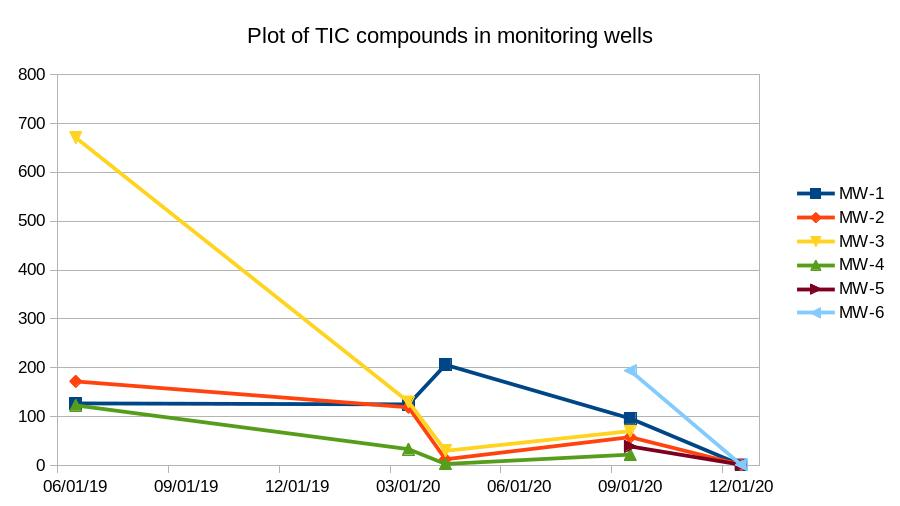

Sarva Bio Remed, LLC
Copyright: Sarva Bio Remed, LLC, 2022. All Rights Reserved.
Who we are?
- We manufacture green and cost-effective bioremediation solutions.
- We were established in 1997.
- We love our customers and they love us back.
Who we are? (contd.)
- We are a family-run company with a track record of successful projects.
- Team
- Gnanu Ayysola, President & CEO
- A serial entrepreneur building companies addressing hydro-carbon contamination.
- Satya Ganti, Retired President & CEO, Consultant
- Gnanu Ayysola, President & CEO
Agenda
- Recent projects
- The economics
- The timelines
- The outcomes
- Past projects
- Questions?
Cleanup of an abandoned gas station - Mays Landing, NJ
- The site was formerly utilized as an automotive service with
- Gasoline
- and Kerosene fuel pumps.
- The rest of the slides in this section (Mays Landing, NJ) present the project in some greater detail
Mays Landing, NJ (contd.)
- Areas of concern
- Unleaded gasoline underground storage tank (UST)
- 2 X 8000 gallons tank - Tank-1, Tank-2
- Leaded gasoline UST
- 2 X 3000 gallon Tank-3 and Tank-6
- 2000 gallon Tank-4
- Kerosene UST
- 1000 gallon - Tank-5
- 2 dispensers and appertenance piping
- Unleaded gasoline underground storage tank (UST)
Mays Landing, NJ (contd.)

Mays Landing, NJ - (contd.) - AOCs
 Areas of Concern
Areas of Concern
Timeline - Mays Landing, NJ (contd.)
- Site was operational last in 1989 and vacated since then.
- Tanks were removed on August 3rd, 2018.
- An in situ remedial strategy for groundwater was proposed in Mar 2020.
Results in Monitoring Wells (MW) - Mays Landing, NJ (contd.)
- 
Notes on the rate of bioremediation at site - Mays Landing, NJ (contd.)
- Location: MW-3
- Date 3/13/2020: 130
- Date 4/27/2020: 29.9
- Duration: 45 days
- 50 % decay: 20 days
Conclusions - Mays Landing,NJ (contd.)
- HydroRemed was successful in cleaning up the site under 6 months.
- The project was completed within 3 years and under budget.
- The site is not listed as a priority by the NJDEP.
SBR Products
All products are available in a Ready-To-Use (RTU) liquid form for easy application.
Our products are listed on the National Contingency Product List maintained by the US EPA.
How can we help in the cleanup of Red Hill?
-
Our initial analysis of the data published in December 2021, the following wells would be our initial hotspots that need to be addressed.
- RHMW02
- RHMW03
- RHMW06
- RHMW08
- RHMW09
Selected Notes From Past Projects
- We have been successfully cleaning up sites since 2002. The following sites collect some salient parts from the reports and details are available in attached references.
Selected Notes (contd.)
- Rate of bioremediation at a site in Newport News, Virginia
- Initial Value (TPH-DRO) = 11000 ppm
- Final Value (TPH-DRO) = 990 ppm
- Duration = 7 days
- Time to reduce contamination by 50 % = 2.878 days
- Rate of reduction for Aromatics (in ng/mg or ppm)
- Day 0: 14143
- Day 28: 7222
- Duration: 28 days
- Time to reduce contamination by 50%: 28.87 days
References
- Site at Newport News
- Bioremediation Agent Effectiveness Test
- TCE/PCE Cleanup
- Post 1
- Blog Post on Mays Landing